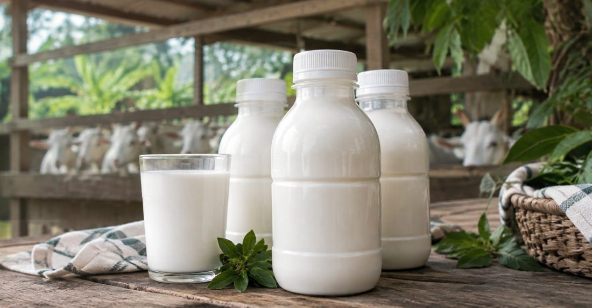
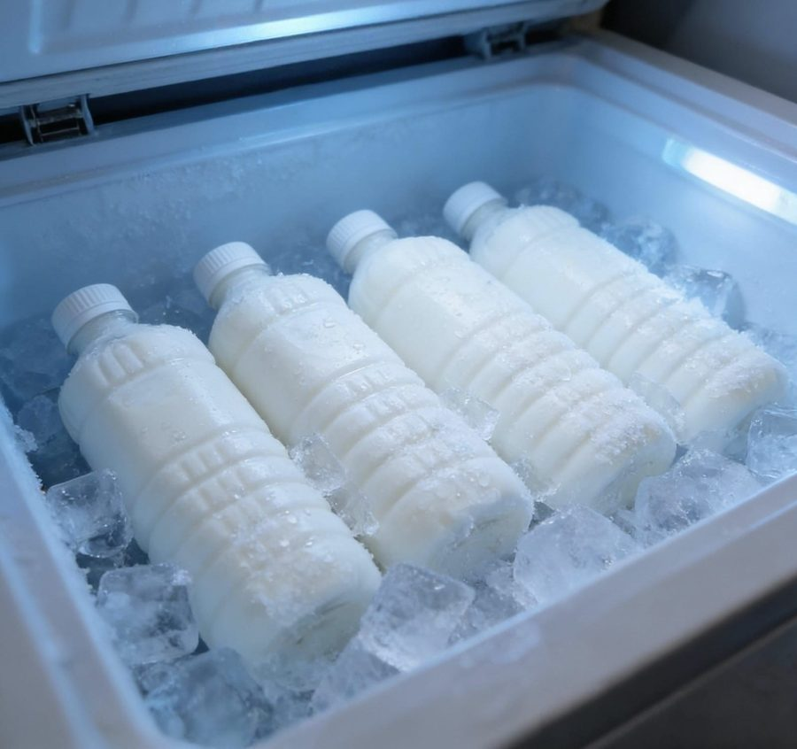
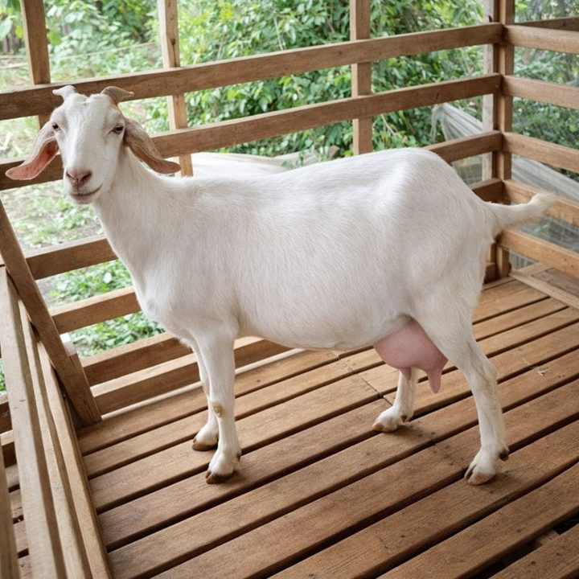

Susu Saanen segar
Susu kambing Saanen memiliki rasa creamy dan segar, tanpa bau prengus. Rasanya cocok untuk yang baru pertama kali mencoba susu kambing. Susu dikirim dalam keadaan segar agar kualitasnya tetap terjaga.

HargaRp 20.000 / botol 500 mlStok tersedia- Manis & CreamyMemiliki rasa manis alami tanpa aroma prengus yang menyengat.
- PengirimanSusu diperah dan dikirim pada hari yang sama.
- Ongkir Gratisongkir area Surabaya Timur
- 100% Murnimurni, halal, tanpa pengawet

Kenapa memilih susu Saanen kami?
Susu diperah dan dikirim pada hari yang sama dalam kondisi dingin untuk menjaga kesegarannya hingga sampai ke rumah Anda.
- Murni, tanpa pengawetTanpa bahan tambahan apa pun
- Manis dan creamySusu kambing Saanen memiliki rasa manis alami tanpa bau prengus yang menyengat.
- Segar sampai rumahSusu diperah dan dikirim pada hari yang sama untuk menjaga kesegarannya.
- 100% HalalDiproduksi secara higienis dan halal.
- Gratis ongkirUntuk area Surabaya Timur, tanpa minimal pembelian.
Pesan dalam tiga langkah
Saanen dibanding susu lain
Ketuk salah satu jenis susu untuk melihat rasa, aroma, dan teksturnya.
Susu SaanenPilihan kami
- Rasa
- Manis, creamy
- Aroma
- Ringan dan tidak menyengat
- Tekstur
- Creamy
Susu Etawa
- Rasa
- Khas susu kambing
- Aroma
- Cenderung lebih kuat
- Tekstur
- Lebih kental
Susu Sapi
- Rasa
- Gurih, sedikit manis
- Aroma
- Netral
- Tekstur
- Cair
Kambing Saanen
Dijuluki “ratu kambing perah” karena produksi susunya yang tinggi dibanding jenis kambing lain.
- Asal
- Lembah Saanen, Pegunungan Alpen, Swiss.
- Ciri fisik
- Bulu putih atau krem yang pendek, tubuh besar dan tegap, biasanya tidak bertanduk.
- Sifat
- Tenang, jinak, dan mudah ditangani saat diperah.
- Perawatan
- Kulitnya peka terhadap terik matahari, sehingga perlu kandang yang teduh dan ventilasi baik.

Kandungan susu Saanen
Berdasarkan literatur ilmiah (USDA dan jurnal gizi). Susu kambing adalah pangan, bukan obat. Tidak untuk bayi di bawah 12 bulan. Penderita alergi susu atau intoleransi laktosa sebaiknya berkonsultasi ke dokter.
Cara penyajian
Ulasan Pelanggan
Pertanyaan yang sering ditanyakan
Apakah susu Saanen berbau prengus?
Susu kambing Saanen memiliki rasa creamy dan segar, tanpa bau prengus atau rasa amis. Susu dikirim dalam keadaan segar agar kualitasnya tetap terjaga.
Masa simpan susu
Suhu ruang (cair): ±2 jam
Di kulkas (2–4°C) hingga 3 hari
Di freezer (−18°C) hingga 3 bulan
Berapa harga dan ukurannya?
Rp 20.000 per botol 500 ml.
Apakah ada ongkos kirim?
Gratis ongkos kirim untuk wilayah Surabaya Timur.
Bagaimana cara melakukan pembayaran?
COD (bayar saat susu diterima) atau QRIS. Untuk QRIS, unggah bukti pembayaran di formulir pesanan.
Apakah susu ini aman untuk bayi?
Tidak untuk bayi di bawah 12 bulan. Penderita alergi susu atau intoleransi laktosa sebaiknya berkonsultasi ke dokter terlebih dahulu.
Apakah susu kambing Saanen bisa disajikan hangat?
Bisa. Panaskan susu dengan api kecil sambil diaduk perlahan agar tidak menggumpal. Cukup panaskan hingga muncul buih-buih kecil dan hindari merebus susu hingga mendidih.
Margaluyu Farm adalah usaha peternakan sapi dan kambing kami. Salah satunya kambing Saanen, yang kami jadikan penghasil susu. Nama “Margaluyu” kami pilih sebagai doa agar setiap langkah usaha selaras dan membawa manfaat.